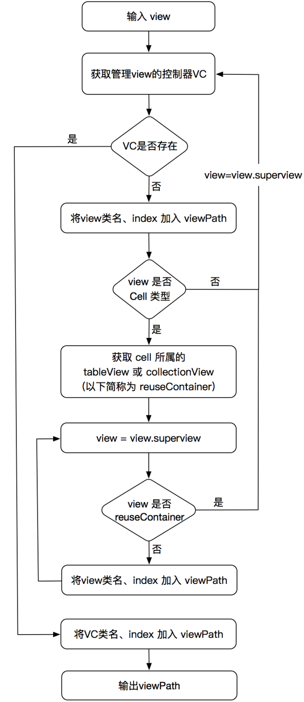
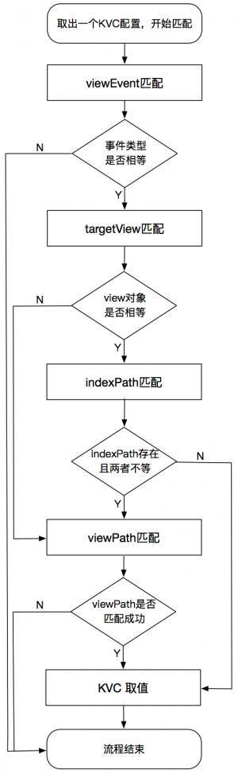
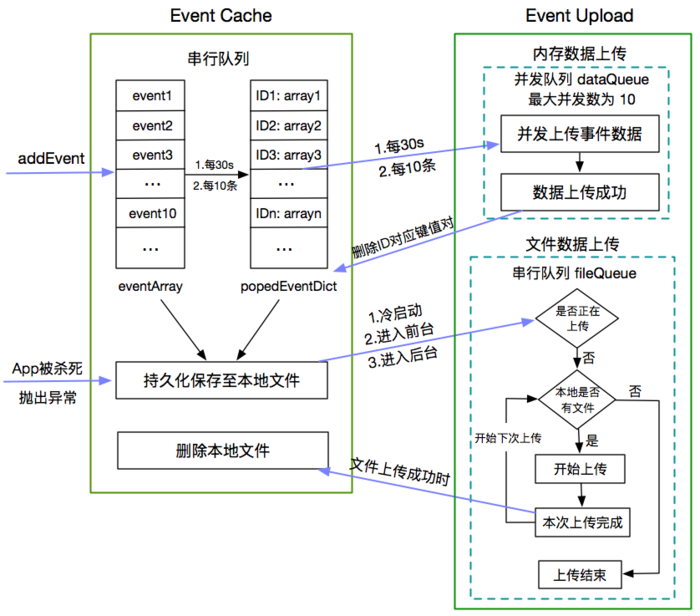

引言
目前业界实现的数据埋点的方式分为三类：代码埋点、可视化埋点和无埋点。这里简单的介绍一下三种埋点方式：
1 | (1)代码埋点即是在代码的关键部位植入所要收集数据的N行代码，需要熟悉业务代码实现，深入了解产品的业务逻辑及项目结构才能实施； |
由此可见，无埋点技术的实现有诸多优点：使埋点代码和业务代码解耦、减少埋点工作量、通过动态下发埋点配置避免漏埋错埋点等等。
无埋点技术可以解决目前埋点的哪些问题
1.基本事件收集无需手动埋点收集
2.业务层数据可以动态获取收集
3.根据服务端下发配置更删改查需要收集的事件和业务数据
无埋点技术实现的难点
1.业务参数如何自动获取
2.自动获取埋点的时机
3.RN、Swift的收集
4.如何产生视图View的唯一标识并且埋点系统可以识别
5.各种事件尤其是特殊case：如两个业务使用同一个页面、一个按钮展示不同文字等许多特殊场景，如何无埋点实现
6.配置生成的工作量如何实现，业界使用了圈选SDK配合实现，无埋点SDK如何去读取配置并无痕去动态修改需要获取的事件和参数
无埋点技术的实现方案
1.使用AOP思想实现iOS各种类的各种方法的拦截
- 系统类的方法拦截
- 系统代理方法、通知的拦截
- 自定义类的方法拦截
2.通过viewPath来标识视图View，以及生成唯一不变的viewId
1 | 视图唯一标识的实现方案打算参考《网易HubbleData无埋点SDK在iOS端的设计与实现》http://www.jianshu.com/p/f0c4e280357c |
viewPath和viewId的生成是无埋点的一个难点，因为要能为不同的场景下的视图生成唯一且不变的视图唯一标示viewId，比如Controller嵌套Controller，视图中的子视图消失，导航栏由于切换导致位置变化等，这些场景的ViewId的生成需要case by case的处理。

3.服务端下发配置，SDK请求和解析配置，SDK能够根据配置使用iOS的KVC技术，去获取需要捕获的事件和业务参数
- 上传KVC配置
利用 圈选SDK 上传 KVC配置 的操作对于用户是透明的，主要由开发人员进行上传与管理。此操作可以在任何时候进行，在想要收集某个或某些版本的 App 中的业务数据时，上传相应的KVC配置信息至后台即可，达到了根据需要动态可配的效果。 - 请求KVC配置
SDK 在初始化时会触发 KVC配置 的请求操作，从后台拉取 App 当前版本对应的所有KVC配置，并将请求结果缓存起来，以提供给下一步使用。
4.业务数据的收集和上报
1 | 这一部分是 SDK 无埋点技术的核心，接下来详细介绍这部分的实现逻辑。它的实现流程如下： |
可参考文章《iOS无埋点数据SDK实践之路》http://www.jianshu.com/p/69ce01e15042的思路实现：
这个环节的核心是基于viewPath的 view 匹配，主要实现是通过循环遍历viewPath的每个节点的信息与当前 view 及其父view 依次进行匹配。因此这一步会产生一定的时间与性能消耗。为了尽可能减少这部分的操作，SDK 可使用一些方式进行优化，其中一个就是基于缓存view的优化。
1 | 这一部分是 SDK 无埋点技术的核心，接下来详细介绍这部分的实现逻辑。 |

上传埋点数据的时机机制

5.kvc配置的维护
1.KVC的异常处理
SDK 的无埋点功能的实现其实主要依赖于KVC，但是众所周知，KVC是非常危险的，很容易造成程序崩溃。例如一旦 key 或 keyPath 所对应的属性名不存在，立刻会导致程序抛出一个NSUndefinedKeyException异常，如果应用没有处理此异常，程序就会Crash。
因此，为了避免程序Crash，SDK 内部增加了对KVC异常的处理。具体实现是给 NSObject 增加一个 Category ，重写 valueForUndefinedKey: 方法，并在方法中return nil。
1 | @implementation NSObject (KVCExceptionHandler) |
2.KVC配置的维护管理
一般来说，上传的所有的 KVC配置 需要与 App 的版本相对应，因为 App 版本不同会直接导致keyPath可能不一样。所以与 KVC配置 相关的工作有如下2个：
- 针对当前 App 版本上传相应的 KVC配置，以获取想要的业务数据
- 当 App 新版本发布时，需要对之前版本上的 KVC配置 逐一验证，是否仍然适用于新版本。如果仍然适用，则直接在管理后台上把新的版本号添加到此 KVC配置；如果不再适用，则对新版本再上传一个新的KVC配置。
为了解决这个痛点，SDK 中增加了一种方案来避免这种重复且繁琐的工作。具体的方案是：
- 在上传 KVC 配置时，指定某个区间的版本，或者不指定具体的版本（即应用到当前所有版本上）；
- SDK 在使用KVC配置获取业务数据失败时，添加相关的错误日志，并上报上去。其中错误日志里包含了
appKey、appVersion、keyPath等信息，这样就能在后台清晰的看到哪些 KVC配置 在哪个 App 版本上存在问题； - 使用脚本监控与
KVC相关的错误日志。如果监控到有错误日志上报，则发送邮件通知给相关人员；
因此，SDK 采用此方案优化之后，KVC配置 的管理工作就只有1个了：
- 根据Log信息快速找到对应的 KVC配置，并上传一个针对新版本的 KVC配置
6.RN、Swfit页面的处理
1.swift中对viewPath的优化
由于类名中的ModuleName前缀的改变造成的，那么就干脆在生成viewPath时，去掉所有的Swift的ModuleName前缀。
2.RN页面收集
1 | 参考文章《iOS无埋点SDK 之 RN页面的数据收集》http://www.jianshu.com/p/0e1f2d357e39 |
7.UI-XPath的iOS实现规则
1.对于大多数不存在重复利用，不存在位置变化的视图View的UI-XPath方案
可以根据当前ViewController+视图在APP的视图结构+视图在ViewController的索引来确定唯一标识。
如：BAFExampleViewController/UIViewControllerWrapperView/UIView[0]
2.对于页面访问的UI-Path方案
可以根据ViewController+当前页面的视图来确定唯一标识
如：BAFButtonViewController/UIView
3.对于复杂的view，如cell存在上下滑动的重复利用，这类我们要还需要1中的基础上加上cell的indexPath来确定唯一标识。
如：BAFExampleViewController/UIWindow/UILayoutContainerView[0]/UINavigationTransitionView[0]/UIViewControllerWrapperView[0]/UIView[0]/UITableView[0]/UITableViewWrapperView[0]/UITableViewCell[3]\section:0\row:0
4.对于其他会变换状态的视图，我们可以可以根据1基础的加上视图的其他状态变化标识，如按钮的标题或者action等来确定唯一标识。
如：BAFButtonViewController/UIWindow/UILayoutContainerView[0]/UINavigationTransitionView[0]/UIViewControllerWrapperView[0]/UIView[0]/UIButton[0]_确定
5.对于启动和退出，我们可以使用APP的APPId作为唯一标识
如：pregnency/
6.对于其他更复杂的case，如视图在轮播导致位置变化或者消失，可能会影响index，我们可以参考1-5的思路来找到方法来确定唯一标识。
如：BAFButtonViewController/UIWindow/UILayoutContainerView[0]/UINavigationTransitionView[0]/UIViewControllerWrapperView[0]/UIView[0]/UIButton_确定
参考文章
http://www.jianshu.com/p/69ce01e15042